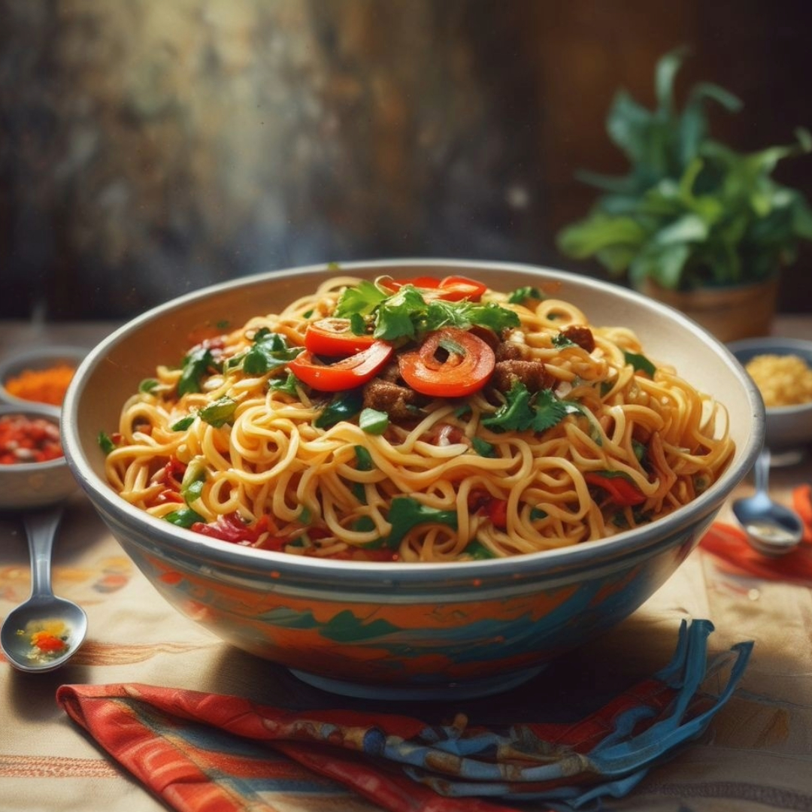
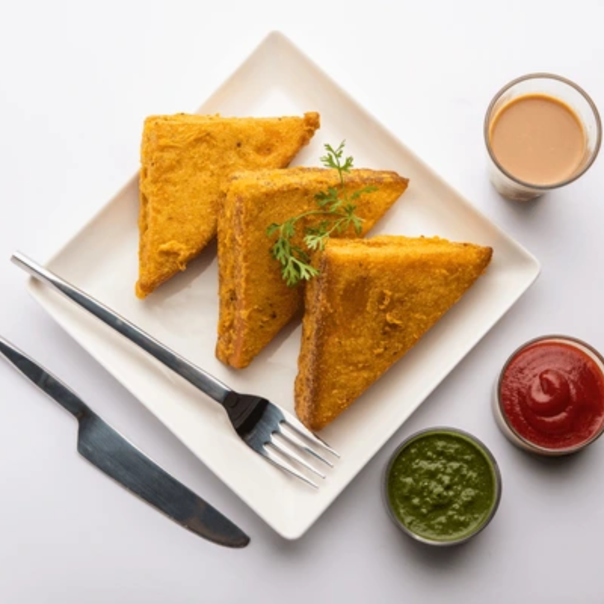
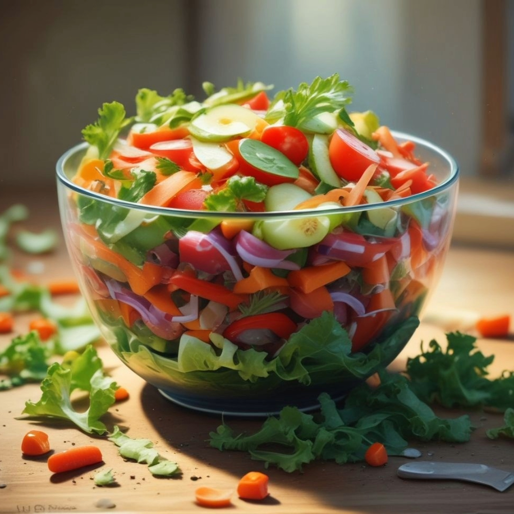
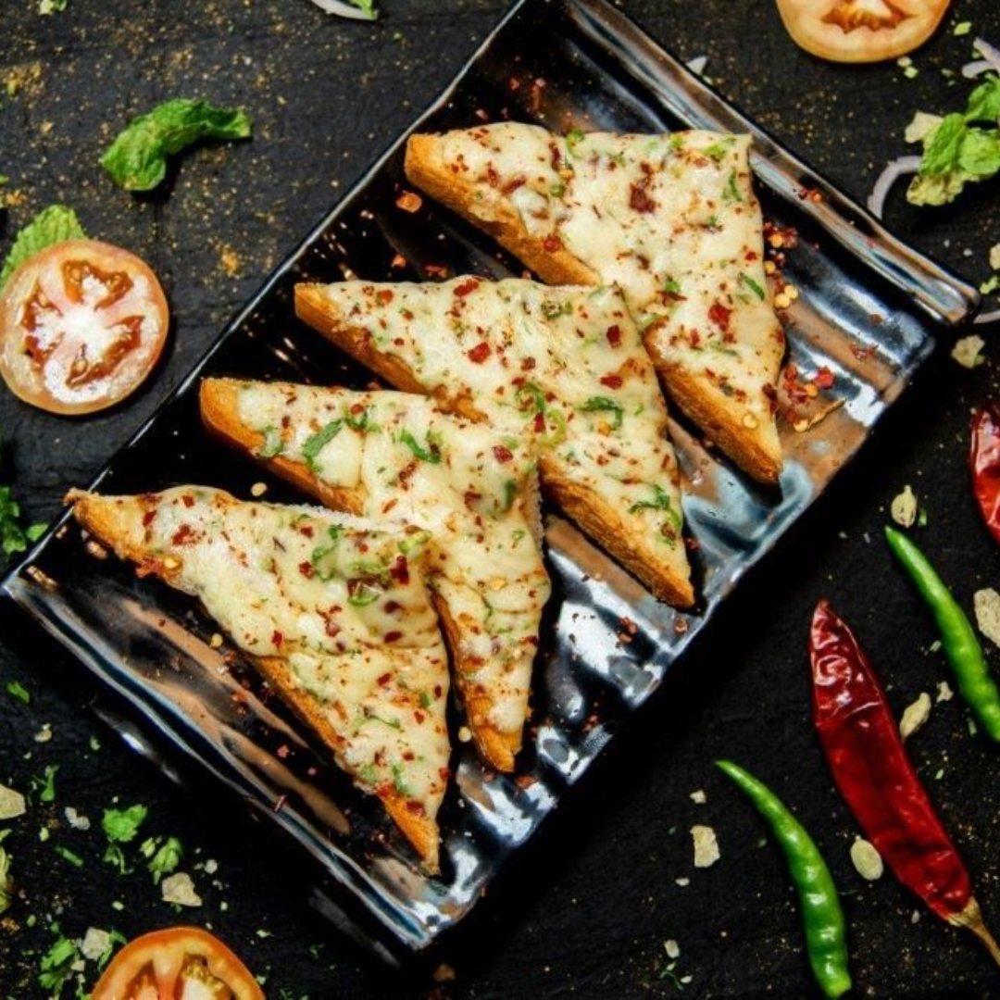
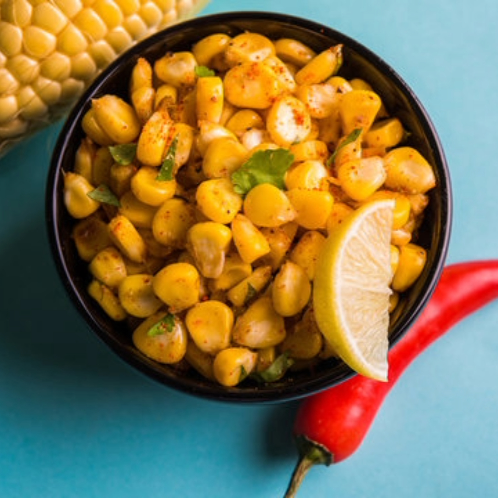
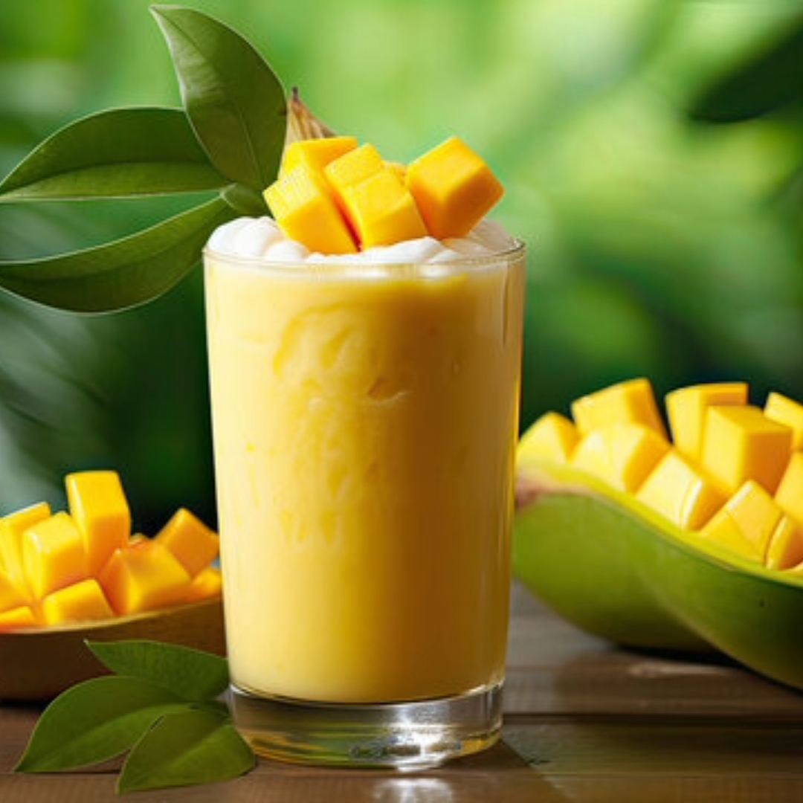

Quick Snack Recipes

Masala Maggie
Servings: 2
Ingredients:
- 1 packet Maggie noodles
- 1 cup mixed vegetables (carrots, peas, capsicum)
- 1 onion, chopped
- 1 tomato, chopped
- 1 tbsp oil
- 1 tsp ginger-garlic paste
- 1/2 tsp turmeric powder
- 1/2 tsp red chili powder
- Salt to taste
- 2 cups water
Instructions:
- Heat oil in a pan; sauté onions and ginger-garlic paste.
- Add vegetables; cook until soft.
- Add tomatoes and spices; cook for 2 minutes.
- Add water and Maggie noodles; cook until noodles are done.
Serve: Hot.

Bread Pakoda
Servings: 4
Ingredients:
- 8 slices of bread
- 2 cups gram flour (besan)
- 1 tsp turmeric powder
- 1 tsp red chili powder
- Salt to taste
- Water
- Oil for frying
Instructions:
- Make a thick batter with gram flour, spices, and water.
- Dip bread slices in batter; coat evenly.
- Deep fry until golden brown.
Serve: Hot with chutney.

Veggie Salad
Servings: 2
Ingredients:
- 1 cup mixed greens
- 1 cucumber, chopped
- 1 tomato, chopped
- 1 carrot, grated
- 1/4 cup feta cheese
- 2 tbsp olive oil
- 1 tbsp lemon juice
- Salt and pepper to taste
Instructions:
- Mix all vegetables in a bowl.
- Drizzle with olive oil and lemon juice.
- Season with salt and pepper.
- Top with feta cheese.
Serve: Fresh.

Chilli Cheese Sandwich
Servings: 2
Ingredients:
- 4 slices of bread
- 1 cup grated cheese
- 2 green chilies, finely chopped
- 1/2 tsp black pepper
- 1 tbsp butter
Instructions:
- Mix cheese, chilies, and pepper in a bowl.
- Spread mixture on bread slices; cover with another slice.
- Butter the outer sides of the sandwich.
- Grill until golden brown.
Serve: Hot.

Masala Corn
Servings: 2
Ingredients:
- 2 cups boiled corn
- 1 tbsp butter
- 1 tsp chaat masala
- 1/2 tsp red chili powder
- Salt to taste
- 1 tbsp lemon juice
Instructions:
- Melt butter in a pan; add boiled corn.
- Add chaat masala, chili powder, and salt; mix well.
- Cook for 2-3 minutes; add lemon juice.
Serve: Hot.

Mango Lassi
Servings: 2
Ingredients:
- 1 cup mango pulp
- 1 cup yogurt
- 1/2 cup milk
- 2 tbsp sugar
- 1/4 tsp cardamom powder
- Ice cubes
Instructions:
- Blend mango pulp, yogurt, milk, sugar, and cardamom powder.
- Add ice cubes and blend again.
Serve: Chilled.